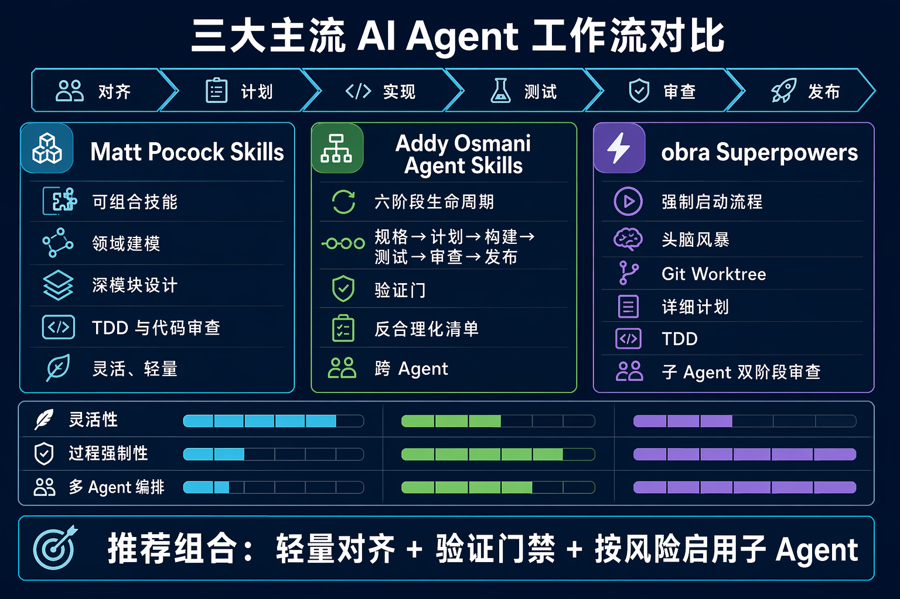

三大主流
AI Agent 工作流
Matt Pocock Skills × Addy Osmani Agent Skills × obra Superpowers
从“能写代码”走向“可复用、可验证、可交付”。
基于公开仓库的 README、SKILL.md、插件结构与工作流说明整理
模型能力之外，流程纪律决定交付质量
“优秀的 Agent 不是更会生成，而是更少跳过关键步骤。”
三套方案都把工程实践编码成可触发的技能，但在自由度、强制程度和多 Agent 协同上取舍不同。
三种工作流哲学
可组合的工程纪律
以 user-invoked orchestration 与 model-invoked discipline 分层，强调领域建模、深模块、TDD 与代码审查。
轻量可组合模型无关完整生命周期
将开发过程明确成 Define → Plan → Build → Test → Review → Ship 六个阶段，并为每阶段提供检查点。
全生命周期验证门跨平台强制式工程方法论
从 bootstrap 开始，要求 brainstorming、worktree、plan、TDD、subagent review 和 branch finishing 形成闭环。
强约束TDD优先多 Agent同一条主线，不同的控制面

能力矩阵：从“建议”到“门禁”
灵活性
过程强制
多 Agent 编排
示意性相对强度，用于帮助选择工作流，不代表官方 benchmark。
对 Chip-RAG 的启发：组合，而非照搬

推荐组合
- Matt Pocock：用于领域语言、架构边界和轻量设计讨论。
- Addy Osmani：用于将 RAG 功能拆成 Spec → Plan → Build → Verify → Review。
- Superpowers：用于高风险改动、跨文件重构和多 Agent 实施。
最佳实践：默认轻量；当任务涉及数据流、生产代码或安全边界时，自动提升流程强度。
推荐工作流：四道门
对齐
明确目标、非目标、数据来源、成功标准；复杂需求先做设计讨论。
计划
按文件和接口拆分任务；声明依赖、风险和验证命令。
实现
垂直切片、TDD、独立 Agent；避免并行修改同一文件。
验证
测试、代码审查、运行时验证；没有证据不宣布完成。
选择建议
吸收三套方案的长处，形成团队自己的最小可行工作流。
下一步：把“任务类型 → 工作流强度”写入项目级技能路由，并用真实任务评估返工率、交付时间和验证覆盖率。
参考：mattpocock/skills · addyosmani/agent-skills · obra/superpowers